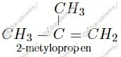
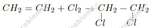
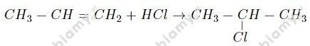
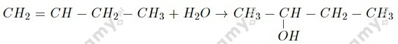
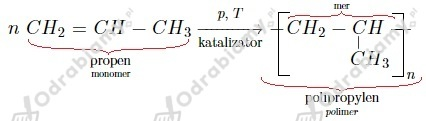

a) eten:
wzór sumaryczny:
wzór półstrukturalny:
b) propen:
wzór sumaryczny:
wzór półstrukturalny:
c) hept-2-en:
wzór sumaryczny:
wzór półstrukturalny:
d) non-3-en:
wzór sumaryczny:
wzór półstrukturalny:
a)
but-2-en
b)
pent-2-en
c)
okt-1-en
d)
dek-2-en
Wzory i nazwy izomerów:

Właściwości chemiczne etenu to:
Po prawej stronie równania widzimy 10 cząsteczek tlenku węgla(IV), z których każda zawiera po jednym atomie węgla. Łączna ilość atomów węgla w produktach wynosi zatem 10. Ilości poszczególnych atomów po obu stronach równania muszą być sobie równe, zatem jeśli w substratach mamy dwie cząsteczki węglowodoru, to każda z nich zawierać będzie 10:2=5 atomów węgla.
Podobnie postępujemy z wodorem. Po prawej stronie równania widzimy 10 cząsteczek wody, z których każda zawiera po dwa atomy wodoru. Łączna ilość atomów wodoru w produktach wynosi zatem 20. Ilości poszczególnych atomów po obu stronach równania muszą być sobie równe, zatem jeśli w substratach mamy dwie cząsteczki węglowodoru, to każda z nich zawierać będzie 20:2=10 atomów wodoru.
W reakcji bierze zatem udział węglowodór o wzorze sumarycznym
Równanie tej reakcji uwzględniające ilość cząsteczek tlenu ma postać:
a)

b)
c)

d)

Równanie reakcji:

Wzór monomeru:
Równanie reakcji: